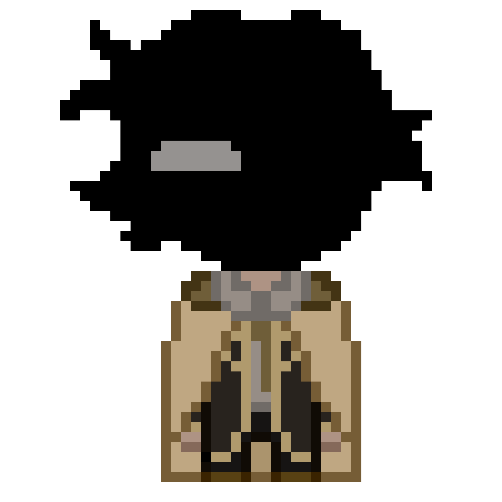
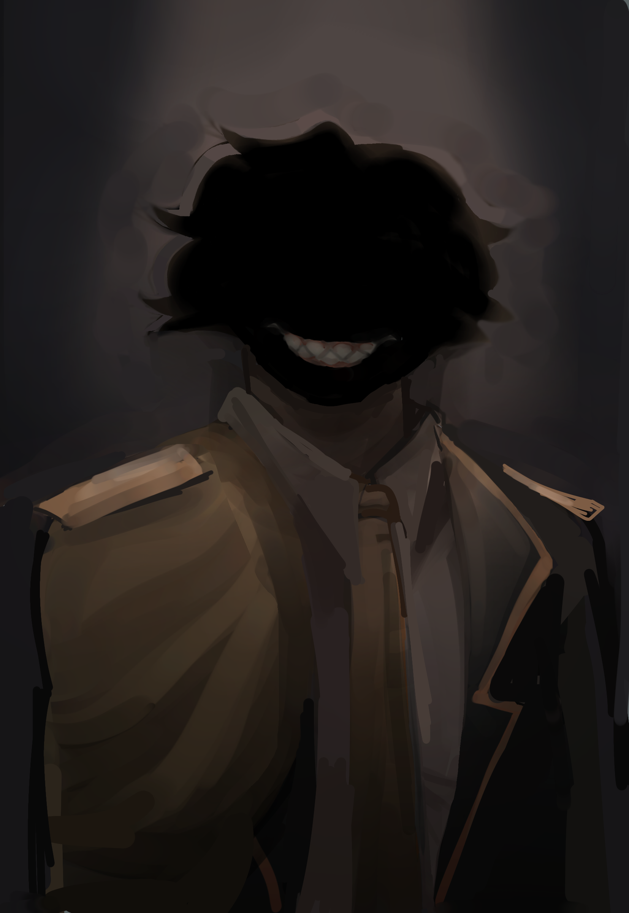
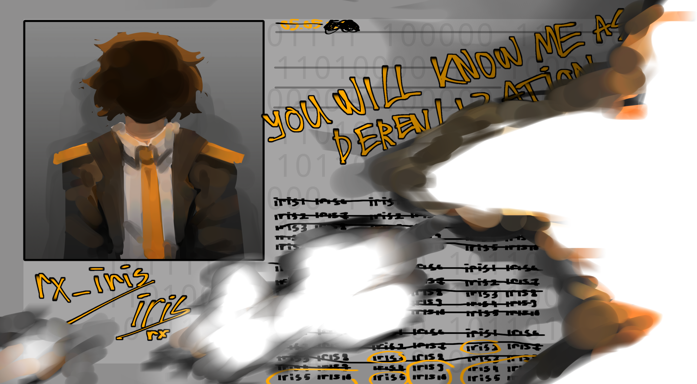
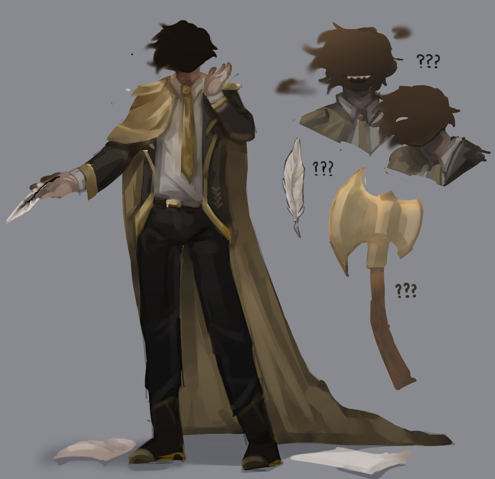
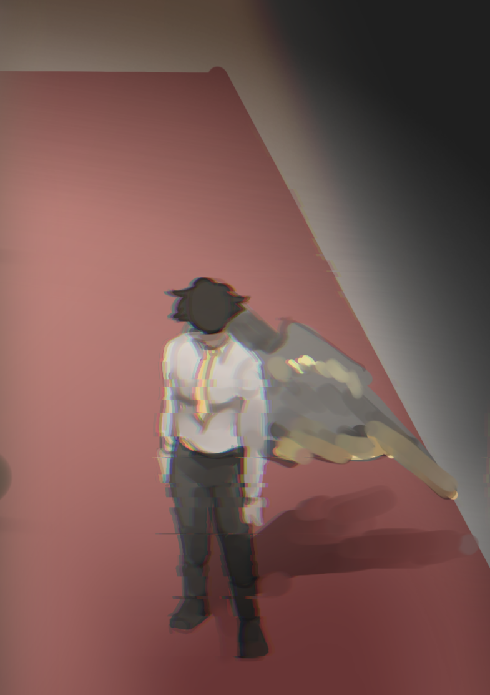
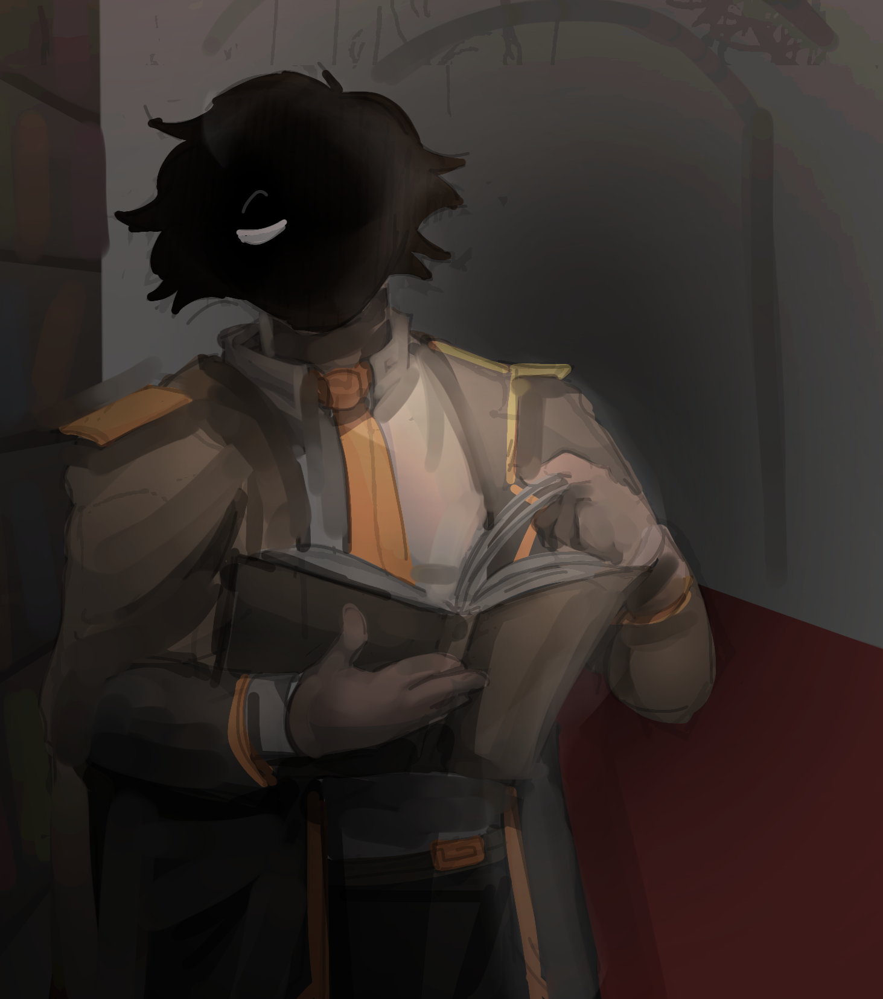

:/[RX_IRIS]/ДЕЛО 1
:/[RX_IRIS]/ДЕЛО 1

|
:/[RX_IRIS]/ДЕЛО 1
 |
|
 |
основатель бесконечной цепи появления копий, то есть «Оригинал». это поврежденный файл, который зависает и просто лагает. ошибка в коде, но не заражает пространство своим присутствием. имеет админский доступ везде, а так же является создателем этого сайта и доступ к этим данным имееЛСЯ только у него. сущности принадлежит коридор "позора" в нигде.
история : несколько тысячелетий назад по временной линии нигде сломал сущность «Сервер» из-за своих идей и желания выбраться из этого мира в другой, уничтожив этот. но оказалось, что сущности, когда-то прикасавшиеся к компасу, становились привязкой к сущности «Сервер». поэтому при стирании каким-то образом сохранилось пространство в виде памяти или воспоминаний Ириса, как бесконечные коридоры со стеллажами записанной информации и предметами, которые остались из мира или от других копий. и по факту это место должно было служить сдерживающей точкой Ириса, но кажется.. что-то пошло не так! и первое время при его путешествиях он удивлялся тому, что встречал сущностей, похожих на него.. |
- он очень любит командные блоки
- он не привязан к серверу, и тот не привязан к нему. он дополняет сервер, а сервер чем-то его.
- каждой копии в нигде посвящен коридор, а его коридор – это конец самого нигде, куда дойти может только он.
- его никнейм изкаверкали до "рекс" и один робот называет его "папаша". хотя его зовут... просто ирис
:/ галерея


